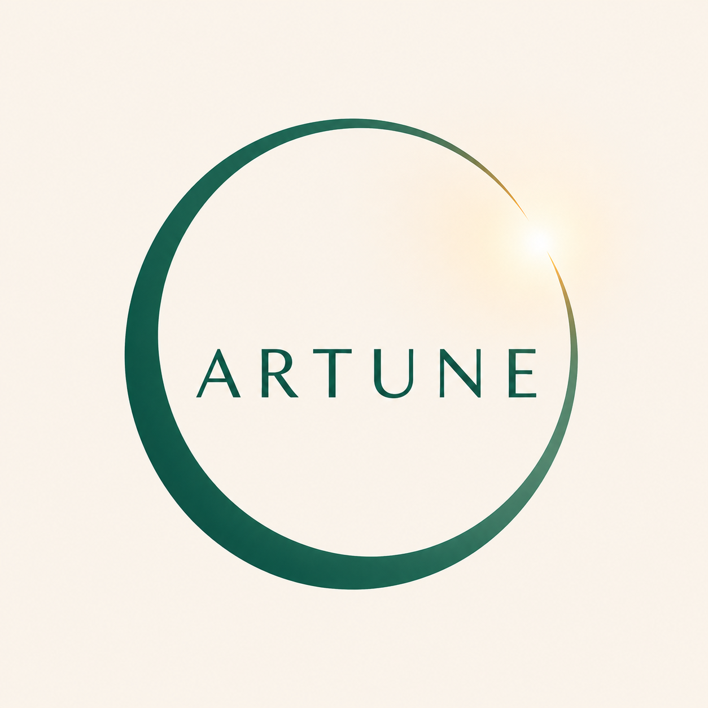

About
Artune means awake.
It is a place for cultivating awareness, of ourselves, one another, and the systems we participate in.
Drawing from psychology, neuroscience, systems thinking, systems psychodynamics, mindfulness, and human development, Artune invites learners into a deeper practice of noticing, making sense, and responding with greater intention.
We do not approach learning as a search for simple answers. We approach it as a way of developing better questions, richer perspectives, and greater capacity to meet complexity with awareness.
Whether our focus is personal growth, relationships, groups, organizations, or society, the invitation is the same: to see more clearly, understand more deeply, and respond more intentionally.
Artune exists for people who are curious about human experience and committed to a lifelong practice of learning.
Learn. Lead. Transform.
